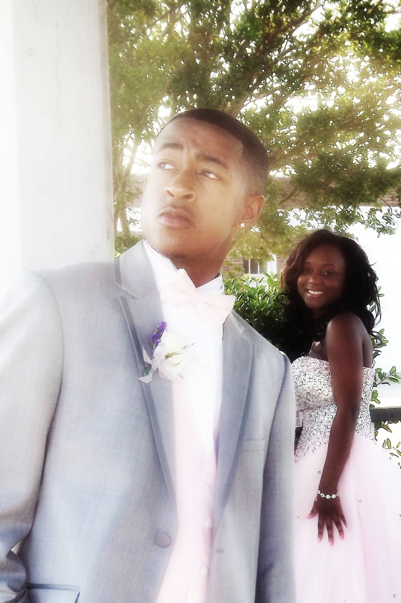
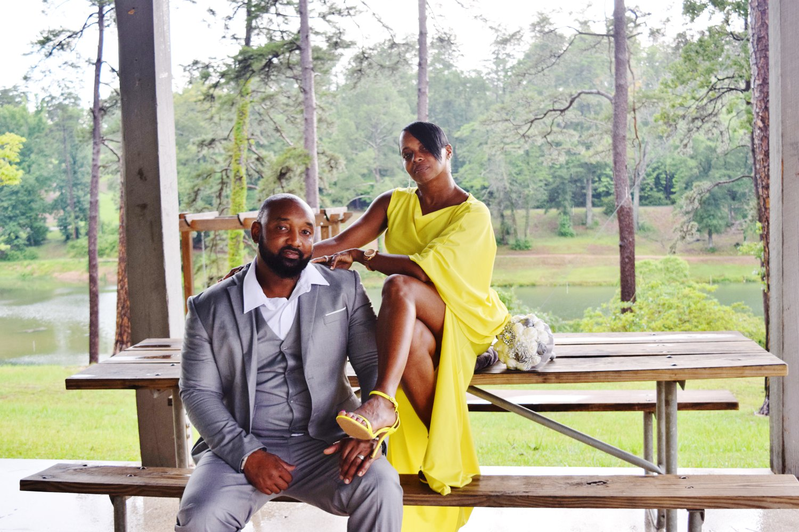
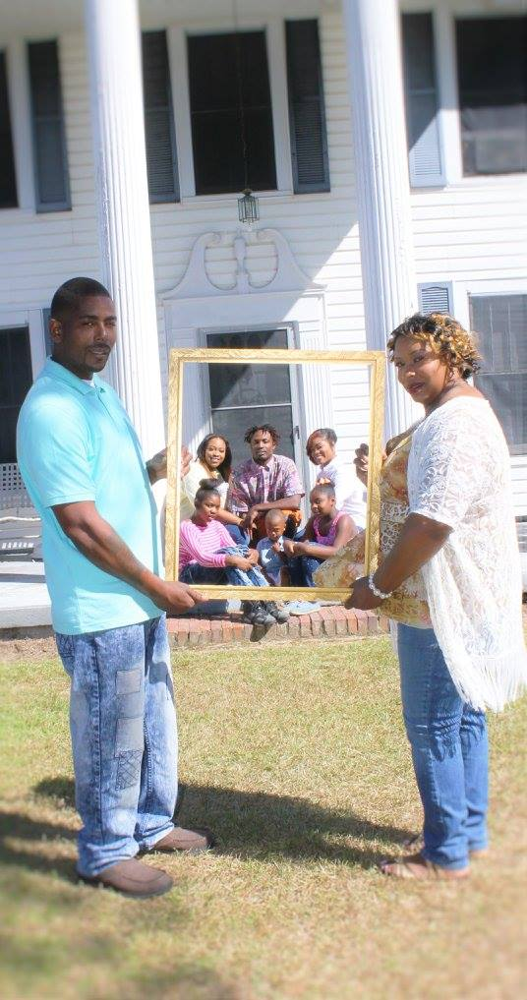
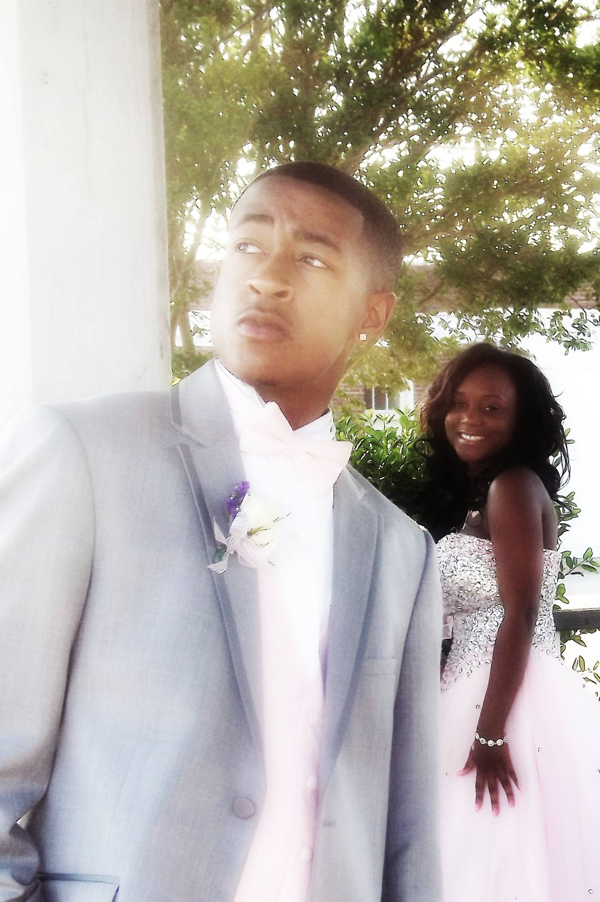
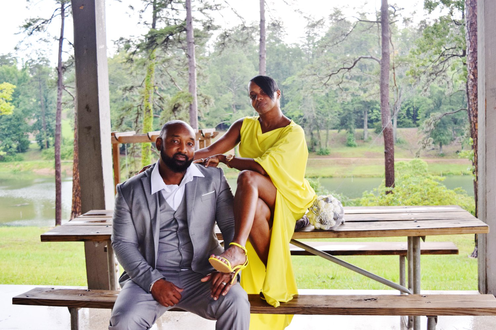
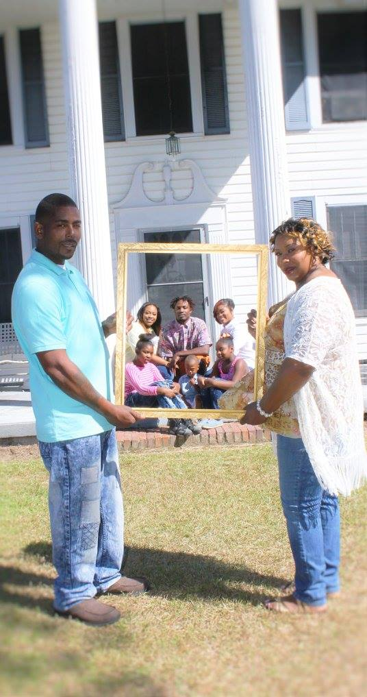

I am fascinated by making still pictures come alive, it allstarted during my childhood, when she was given a gift in the form of a camera. She did her very first photo exhibit during grade school and the rest as they say is history.
Shakella Martin graduated from Auburn University as a cum laude, where she was able to hone and develop her photography skills by exploring abstract ideas and minute life details in particular with modern analogy and digital equipment.
The images projected by Shakella are very life-like, inspiring those who view them with a very personal touch. Her pictures demonstrate normal everyday life activities that people can connect to, thus making her one of the most sought after photographer in town.
See her most current pictures by visiting SD Picture Blog.com or her upcoming photo exhibit “The Life” at the Corcoran Gallery, Washington D.C. on August 15, 2015.
 




